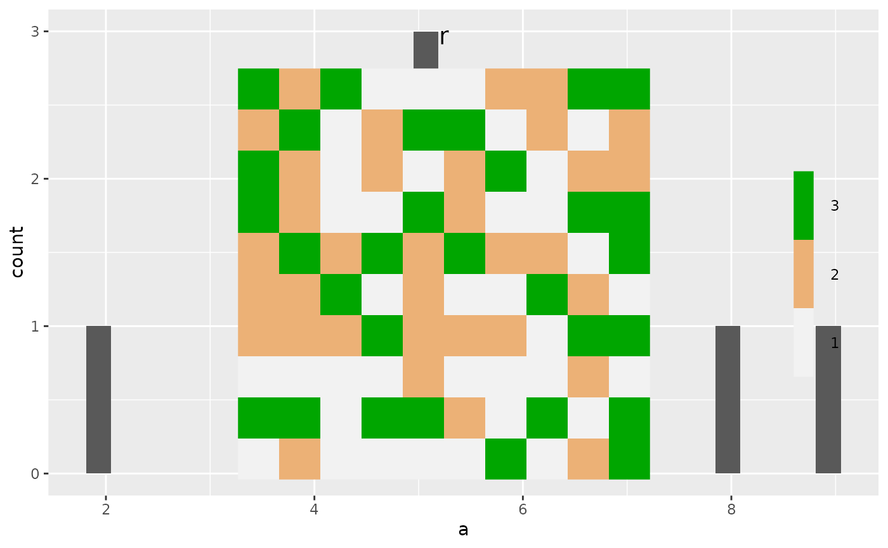
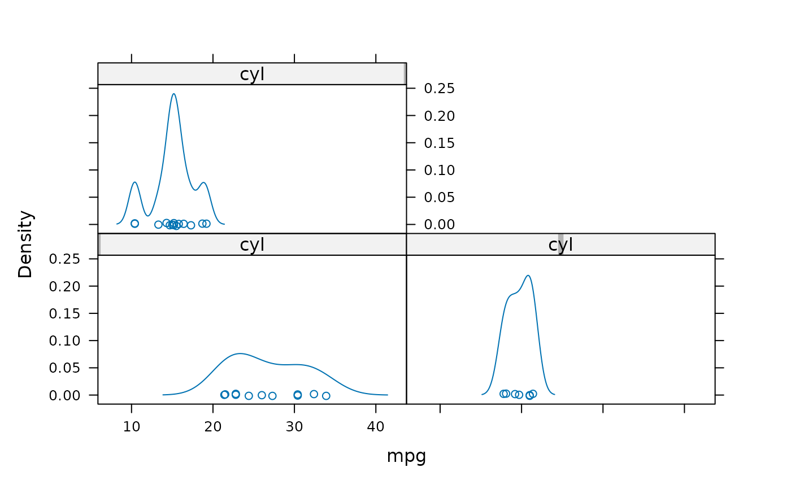

This is a single function call that allows a user to change which format in which
the plots will occur.
Specifically, the two common formats would be to "screen" or to disk as an image file,
such as "png".
THIS CURRENTLY HAS BEEN TESTED WITH ggplot2, RasterLayer, and
tmap objects.
The default (or change with e.g., fn = "print", usePlot = FALSE) uses
Plot internally, so individual plots may be rearranged. When saved to
disk (e.g., via type = 'png'), then Plot will not be used and the single object
that is the result of this Plots call will be saved to disk.
This function requires at least 2 things: a plotting function and arguments passed
to that function (which could include data, but commonly would simply be named
arguments required by fn).
See below and examples.
Plots(
data,
fn,
filename,
types = quote(params(sim)[[currentModule(sim)]]$.plots),
path = quote(file.path(outputPath(sim), "figures")),
.plotInitialTime = quote(params(sim)[[currentModule(sim)]]$.plotInitialTime),
ggsaveArgs = list(),
usePlot = getOption("spades.PlotsUsePlot", FALSE),
deviceArgs = list(),
...
)An (optional) arbitrary data object. If supplied, it will be passed as
the first argument to Plot function, and should contain all the data
required for the inner plotting. If passing a RasterLayer,
it may be a good idea to set names(RasterLayer) so that
multiple layers can be plotted without overlapping each other. When a custom fn
is used and all arguments for fn are supplied and named, then this can be omitted.
See examples.
An arbitrary plotting function. If not provided, defaults to using quickPlot::Plot
A name that will be the base for the files that will be saved, i.e,
do not supply the file extension, as this will be determined based on types.
If a user provides this as an absolute path, it will override the path
argument.
Character vector, zero or more of types. If used within a module, this
will be deduced from the P(sim)$type and can be omitted. See below.
Currently a single path for the saved objects on disk. If filename
is supplied as an absolute path, path will be set to dirname(filename),
overriding this argument value.
A numeric. If NA then no visual on screen. Anything
else will have visuals plotted to screen device. This is here for backwards
compatibility. A developer should set in the module to the intended initial
plot time and leave it, i.e., not NA.
An optional list of arguments passed to ggplot2::ggsave
Logical. If TRUE, the default, then the plot will occur
with quickPlot::Plot, so it will be arranged with previously existing plots.
An optional list of arguments passed to one of png,
pdf, tiff, bmp, or jgeg.
This is useful when the plotting function is not creating a ggplot object,
e.g., plotting a RasterLayer.
Anything needed by fn, all named.
Called for its side effect of plot creation.
type
"screen" -- Will plot to the current device, normally a plot window
"object" -- Will save the plot object, e.g., ggplot object
"raw" -- Will save the raw data prior to plotting, e.g.,
the data argument
"png" -- or any other type save-able with ggsave
THIS IS STILL EXPERIMENTAL and could change in the next release.
Plots now has experimental support for "just a Plot call",
but with types specified.
See example.
The devices to save on disk will have some different behaviours to the screen representation,
since "wiping" an individual plot on a device doesn't exist for a file device.
This offers up to 4 different actions for a given plot:
To screen device
To disk as raw data (limited testing)
To disk as a saved plot object (limited testing)
To disk as a .png or other image file, e.g., .pdf
To turn off plotting both to screen and disk, set both
.plotInititalTime = NA and .plots = NA or any other
value that will not trigger a TRUE with a grepl with the types
argument (e.g., "" will omit all saving).
In cases where files are saved, and where Plots is used within a SpaDES module,
the file(s) that is/are saved will be appended to the outputs slot of the
simList of the module. This will, therefore, keep a record of figures saved
within the simList
# \donttest{
# Note: if this is used inside a SpaDES module, do not define this
# function inside another function. Put it outside in a normal
# module script. Otherwise, it will cause a memory leak.
if (requireNamespace("ggplot2")) {
fn <- function(d)
ggplot2::ggplot(d, ggplot2::aes(a)) +
ggplot2::geom_histogram()
sim <- simInit()
sim$something <- data.frame(a = sample(1:10, replace = TRUE))
Plots(data = sim$something, fn = fn,
types = c("png"),
path = file.path("figures"),
filename = tempfile(),
.plotInitialTime = 1
)
# plot to active device and to png
Plots(data = sim$something, fn = fn,
types = c("png", "screen"),
path = file.path("figures"),
filename = tempfile(),
.plotInitialTime = 1
)
# Can also be used like quickPlot::Plot, but with control over output type
r <- terra::rast(terra::ext(0,10,0,10), vals = sample(1:3, size = 100, replace = TRUE))
Plots(r, types = c("screen", "png"), deviceArgs = list(width = 700, height = 500),
usePlot = TRUE)
# with ggplotify, Plots can also be used to plot/save
# non-ggplot objects:
if (require("ggplotify")) {
if (!require("lattice")) stop("please install lattice")
plotFile <- tempfile()
p1 <- densityplot(~mpg|cyl, data=mtcars)
Plots(data = p1, fn = as.ggplot, filename = plotFile,
ggsaveArgs = list(width = 5, height = 4, dpi = 300, bg = "white", units = "in"),
types = c("screen", "png"), .plotInitialTime = 1)
}
} # end ggplot
#> Loading required namespace: ggplot2
#> Setting:
#> options(
#> reproducible.cachePath = '/tmp/Rtmp5BUHM8/reproducible/cache'
#> spades.inputPath = '/tmp/Rtmp5BUHM8/SpaDES/inputs'
#> spades.outputPath = '/tmp/Rtmp5BUHM8/SpaDES/outputs'
#> spades.modulePath = '/tmp/Rtmp5BUHM8/SpaDES/modules'
#> spades.scratchPath = '/tmp/Rtmp5BUHM8/SpaDES/scratch'
#> )
#> Using setDTthreads(1). To change: 'options(spades.DTthreads = X)'.
#> Saving 6.67 x 6.67 in image
#> `stat_bin()` using `bins = 30`. Pick better value with `binwidth`.
#> Saved figure to: /tmp/Rtmp5BUHM8/file24d5574d0972.png
#> `stat_bin()` using `bins = 30`. Pick better value with `binwidth`.
#> Saving 6.67 x 6.67 in image
#> `stat_bin()` using `bins = 30`. Pick better value with `binwidth`.
#> Saved figure to: /tmp/Rtmp5BUHM8/file24d5564a4b6.png
#> Saved figure to: /tmp/Rtmp5BUHM8/file24d56aeeab47.png
#> Loading required package: ggplotify
#> Loading required package: lattice

#> Saved figure to: /tmp/Rtmp5BUHM8/file24d52d0559b5.png

# } # end of dontrun